ТОО «Kazakhstan Petrochemical Industries Inc.»
Редизайн корпоративного сайта для оператора строительства первого интегрированного газохимического комплекса в Атырауской области.
Стратегическая цель компании — стать эффективным и высокорентабельным отечественным производителем полипропилена и других продуктов газопереработки и нефтехимии к 2021 году.
Цель редизайна сайта
укрепление имиджа компании и повышение узнаваемости бренда
Задачи сайта
Предоставление актуальной информацию о компании, руководстве, участниках проекта и его статусе.
Оповещение о ходе реализации проекта.
Предоставление контактов сотрудников и сбор обращений граждан.
Демонстрация того, что компания внедряет последние технологии и решения в области автоматизации производства.
Реализация интерфейса сайта на трех языках: казахском, русском и английском для повышения доступности информации на сайте.
Реализация проекта
Перед началом работ по проекту у нас было краткое техническое задание от заказчика и точное понимание задач, которые нам предстояло решить, для того, чтобы достичь поставленной цели.
краткое техническое задание от заказчика
точное понимание задач со стороны разработчиков
В подразделах раздела «О компании» можно подробно узнать об инициаторе строительства нового производства, участниках проекта, руководящем составе и изучить историю компании.
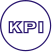  Общая информация
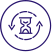 История
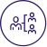 Структура компании
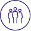 Наблюдательный совет
 Правление
Правление Корпоративные документы
Предоставление актуальной информацию о компании, руководстве, участниках проекта и его статусе — важная задача.
Поэтому при реализации сайта мы уделили особое внимание страницам: Общая информация, История, Правление, Наблюдательный совет и Проект ИГХК.
Презентация проекта ИГХК.pdf Размер: 734.11 КБ
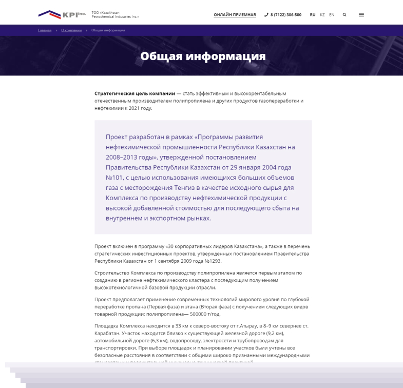
Для информировании о ходе реализации проекта была разработана отдельная страница «Проект ИГХК» с интерактивными блоками, на которой можно ежедневно узнавать актуальную информацию.
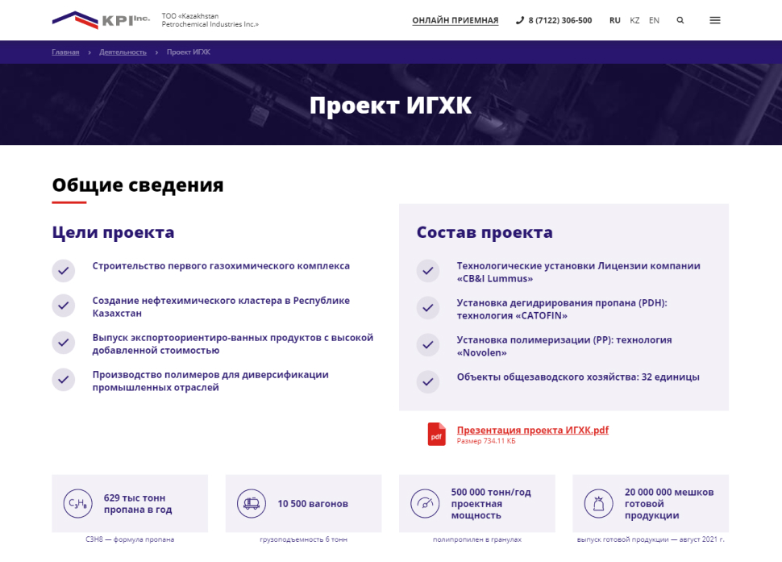Для своевременного оповещения о ходе реализации проекта был разработан раздел «Пресс-центр», в котором на постоянной основе актуализируется информация об изменениях на проекте.
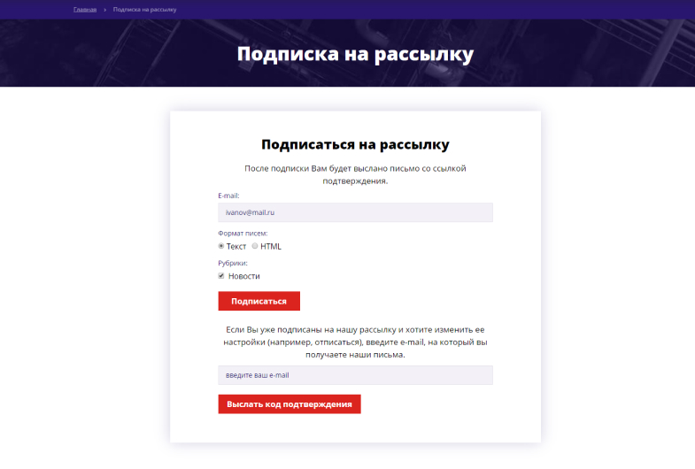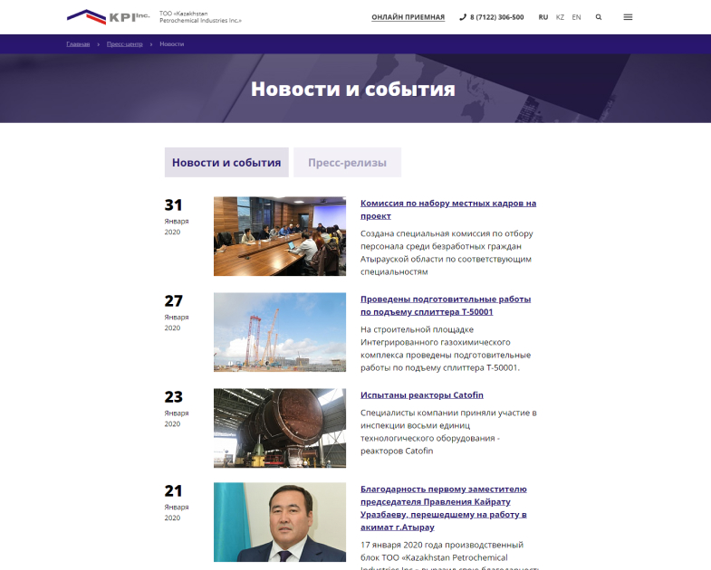
Так же был разработан функционал подписки на рассылку, с помощью которого с сайта компании можно отправлять информацию о ходе проекта всем заинтересованным лицам.
Подписка на рассылку
Оставьте вашу почту и вам будут приходить новости о компании
Для того, что бы было удобно собирать обращения граждан и предоставлять актуальные контакты сотрудников было создано три ключевых раздела для связи с компанией.
 Раздел «Контакты» для размещения номера и адреса строительной площадки и застройщика.
Раздел «Контакты» для размещения номера и адреса строительной площадки и застройщика.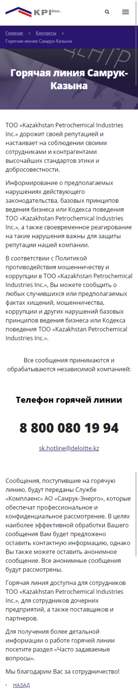 Раздел «Горячая линия» для размещения телефона службы АО «Самрук-Энерго» куда можно передавать как независимому представителю обратную связь о работе компании ТОО «KPI».
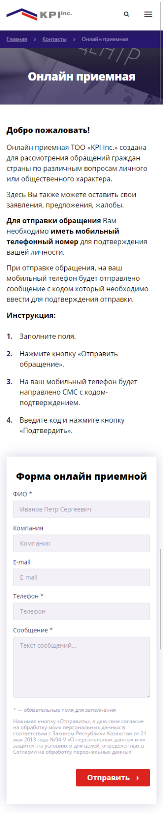 И раздел «Онлайн-приемная» для рассмотрения обращений граждан страны по различным вопросам личного или общественного характера. Чтобы оставить обращение в приемной необходимо ввести свой номер телефона, на который придет SMS для подтверждения обращения. Для реализации этого раздела мы провели интеграцию с сервисом smsc.kz.
ТОО «KPI» — компания, внедряющая последние технологии и решения в области автоматизации производства. Поэтому современность компании было необходимо показать на сайте.
Видеослайдер
Видеослайдер, показывающий ход строительства и тизеры с основными показателями компании и строительства оправдал ожидания и подчеркивает современность и динамичность компании.
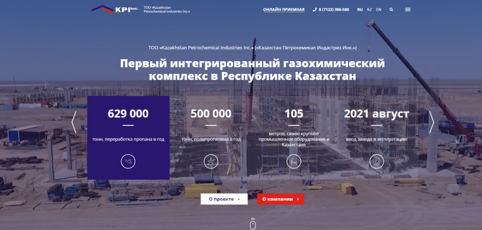
Блок-схема
Анимированная блок-схема наглядно показывает схему современного производства пропилена и полипропилена и то, какие технологии применяются.
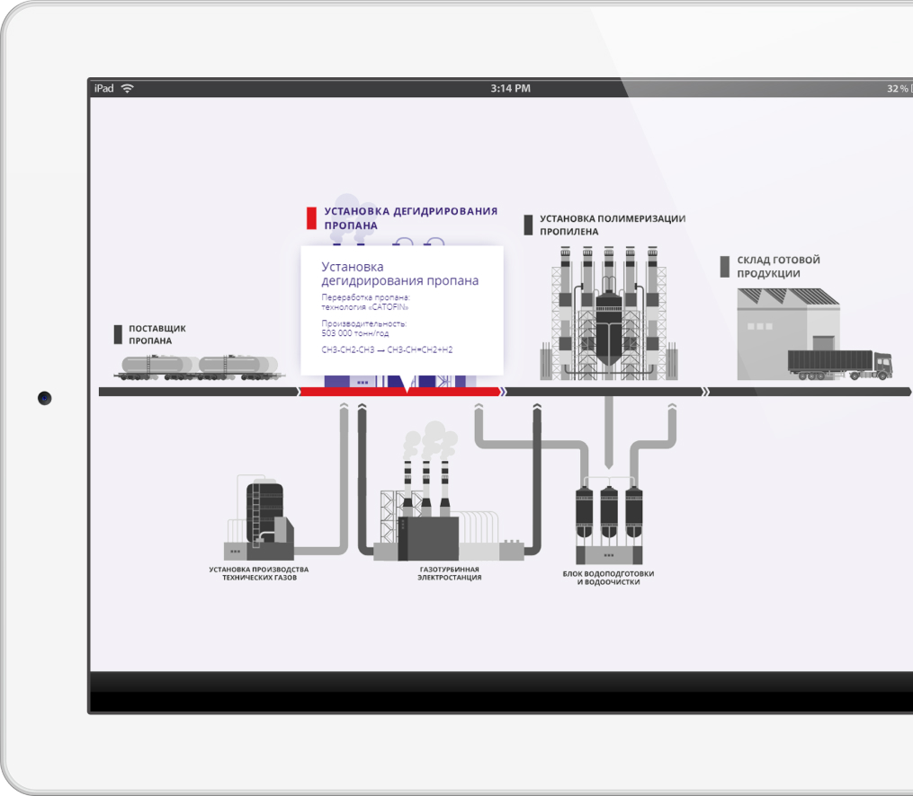
Раздел «История»
Раздел «История» тоже получился очень динамичным, блоки подтягиваются при скролле страницы.

При реализации многоязычного интерфейса сайта особое внимание было уделено удобству администрирования и редактирования контентной части.
Так для оптимизации занимаемого места медиафайлами была использована медиабиблиотека, которая на практике используется разработчиками крайне редко. Теперь, для размещения дополнительных фото в новостях достаточно создать 3 новости на разных языках и указать только 1 альбом из медиабиблиотеки. 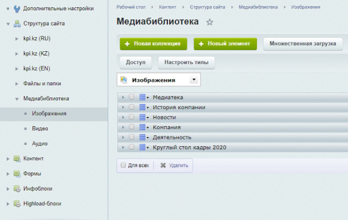 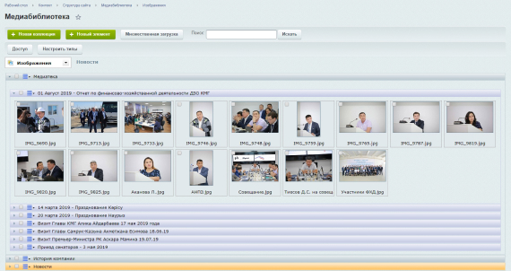
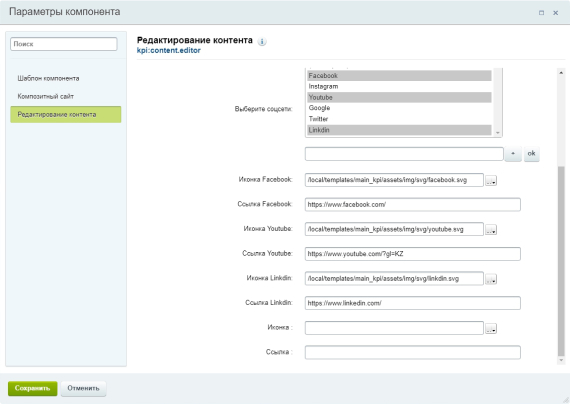 Также для удобства редактирования контента в публичной части сайта, вместо Включаемых областей, был разработан и использован кастомный компонент «Редактирование контента». Удобство заключается в том, что в параметрах компонента можно изменить контент, не погружаясь в нюансы HTML-кода. Функционал компонента «Редактирование контента» позволяет изменять не только текстовые данные, но и дает возможность прикрепить файл, указать дату/время, создать списки множественного выбора, подгружать динамически только нужные для редактирования поля в зависимости от выбранных параметров.
Итог
Разработанный сайт стал важным инструментом коммуникации и полноценным представительством компании в Интернете. Лаконичный дизайн поддержал фирменным стиль компании. Нам удалось предоставить посетителю сайта только важную и нужную информацию и помочь найти ответы на интересующие вопросы, что влияет на укрепление имиджа и узнаваемость компании.